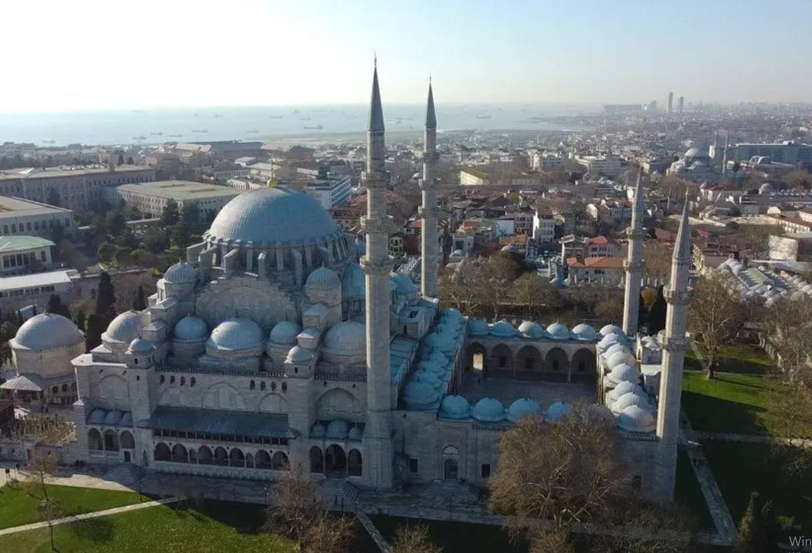

Süleymaniye Camii
Süleymaniye Camii Hakkında
Süleymaniye Camii Hakkında
Süleymaniye Camii Klasik Osmanlı Mimarisinin en önemli örneklerinden biridir. Yapımından günümüze dek İstanbul'da yüzü aşkın deprem gerçekleşmesine karşın, caminin duvarlarında en ufak bir çatlak oluşmamıştır. Dört fil ayağı üzerine oturan caminin kubbesi 53 m yüksekliğinde ve 27,5 m çapındadır. Bu ana kubbe, Ayasofya'da da görüldüğü gibi, iki yarım kubbe ile desteklenmektedir. Kubbe kasnağında 32 pencere bulunmaktadır. Cami avlusunun dört köşesinde birer minare bulunmaktadır. Bu minarelerin camiye bitişik iki tanesi üçer şerefeli ve 76 m yüksekliğinde, cami avlusunun kuzey köşesinde son cemaat yeri giriş cephesi duvarının köşesinde bulunan diğer iki minare ise ikişer şerefeli ve 56 m yüksekliğindedir. Camii, içindeki kandil islerini temizleyecek hava akımına uygun inşa edilmiştir. Yani cami içinde, yağ lambalarından çıkan islerin tek bir noktada toplanmasını sağlayan bir hava akımı yaratacak şekilde inşa edilmiştir. Camiden çıkan isler ana giriş kapısının üzerindeki odada toplanmış ve bu isler mürekkep yapımında kullanılmıştır.
Fil ayağı destekli ana ve destek kubbeleri
28 revakın çevrelediği cami avlusunun ortasında dikdörtgen şeklinde bir şadırvan bulunmaktadır. Caminin kıble tarafında içinde Kanuni Sultan Süleyman'ın ve eşi Hürrem Sultan'ın bulunduğu bir hazire mevcuttur. Kanuni Sultan Süleyman'ın türbesinin kubbesi yıldızlarla donanmış gökyüzü imajını vermesi için, içeriden, metalik plakalar arasına yerleştirilmiş pırlantalarla (elmaslarla) süslenmiştir.
Cami süslemeleri açısından sade bir yapıya sahiptir. Mihrap duvarındaki pencereler vitraylarla süslüdür. Mihrabın iki tarafındaki pencereler üzerinde yer alan çini madalyonlarda Fetih Suresi, caminin ana kubbesinin ortasında ise Nur Suresi yazılı bulunmaktadır. Caminin hattatı Hasan Çelebi'dir.
Süleymaniye camiinin 4 minaresi vardır.[3] Bunun nedeni Kanuni'nin İstanbul'un fethinden sonraki dördüncü padişah; bu dört minaredeki on şerefinin de Osmanlının onuncu padişahı olduğunun bir işaretidir.
Osmanlı külliyeleri içinde Fatih külliyesinden sonra ikinci büyük külliye Süleymaniye külliyesidir. Külliye İstanbul yarımadasının Haliç, Marmara, Topkapı Sarayı ve Boğaziçi'ni gören ortadaki en yüksek tepesinde inşa edilmiştir. Cami, medreseler, darüşşifa, darülhadis, çeşme, darülkurra, darüzziyafe, imaret, hamam, tabhane, kütüphane ve dükkânlardan meydana gelen külliyede Mimar Sinan'ın türbesi dış avlu duvarlarının karşısında mütevazı küçük bir yapıdır. Tiryakiler Çarşısı'nı iki medrese çevreler, arkasındaki yolda iki küçük ev vardır.
"Tiryakiler Çarşısı adını taşıyan ince uzun meydanın bir cephesini oluşturan ufki tek katlı medreselerde, her kubbenin alatında bir pencereyle belirlenen iç odaların imaretleri, aza razı bir zahit tavrı içindeki cephesi, Mimar Sultan Külliyesi'ndeki medrese duvarı pencerelerinin ve kubbe dizilerinin tezyini düzenini hatırlatır"
Anakubbenin kemeri, Sinan tarafından kemeri kübra,(kudret kemeri) diye adlandırılmıştır. Cami avlusunun platformu, Haliç tarafındaki yoldan yüksektedir.